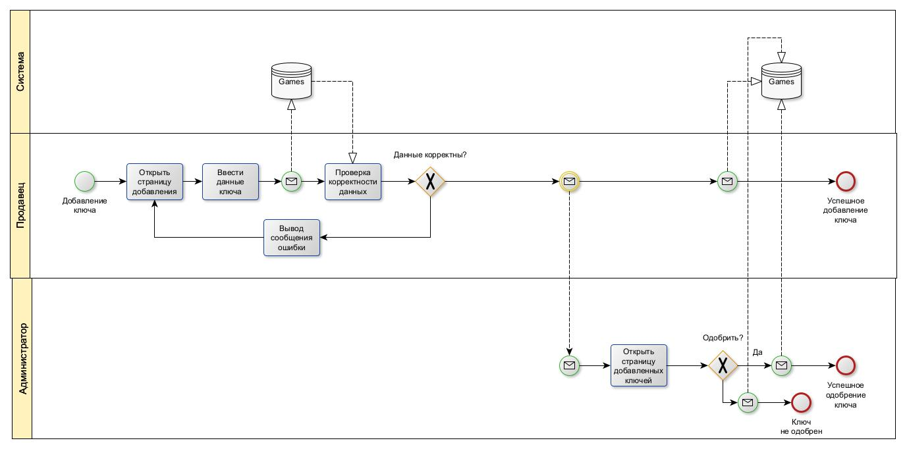
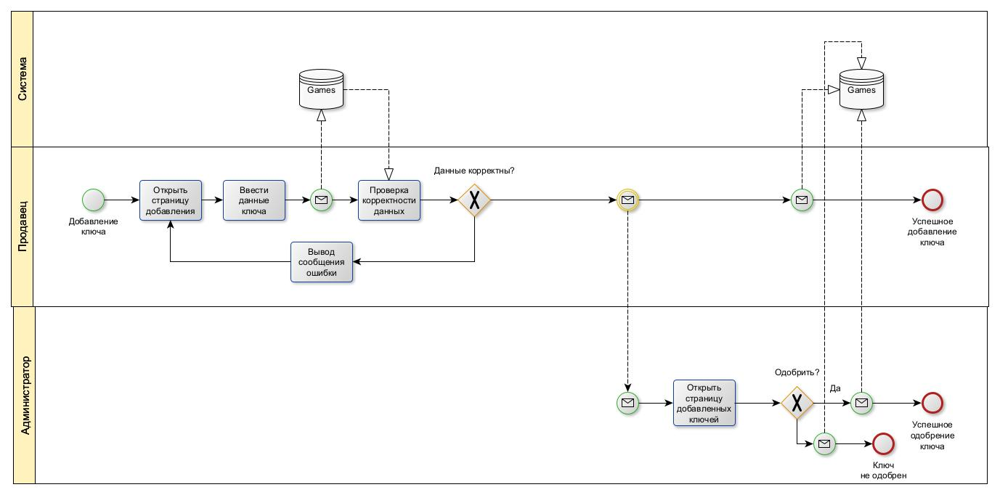
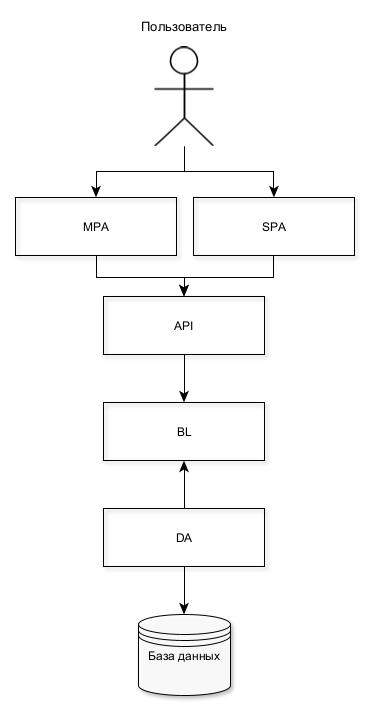
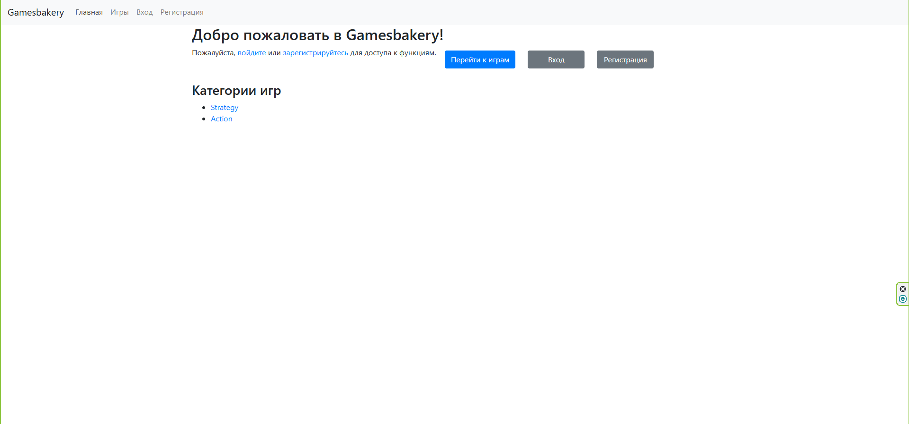
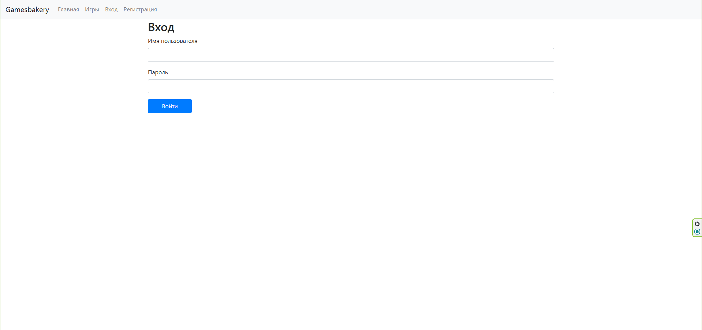
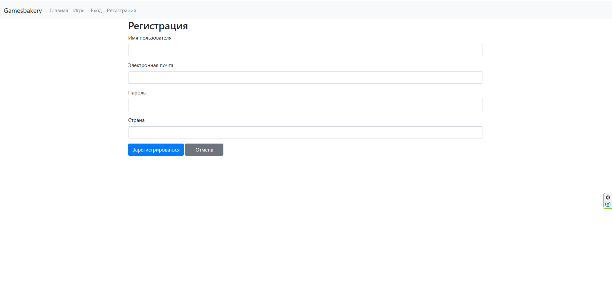
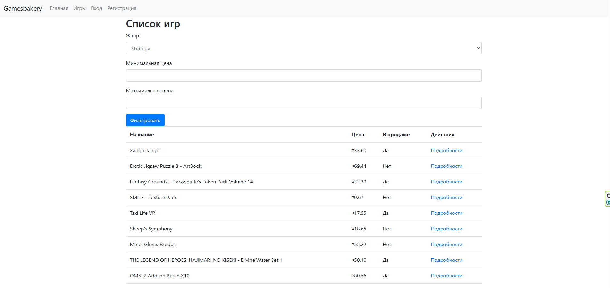

1. Название проекта
Gamesbakery
2. Цель проекта
Цель работы: разработка базы данных и веб-приложения для хранения, обработки и управления данными магазина видеоигр, специализирующегося на продаже цифровых ключей.
Решаемая проблема: отсутствие в существующих решениях гибкой системы покупки нескольких копий игр с возможностью их последующей передачи другим пользователям.
Предоставляемая возможность: удобный механизм приобретения, продажи и дарения цифровых ключей, обеспечивающий взаимодействие между покупателями, продавцами и администраторами.
3. Краткое описание идеи проекта
Данный проект представляет собой систему для продажи цифровых копий (ключей) видеоигр, их классификации по жанрам и ведения учёта заказов от пользователей. Система позволяет регистрировать новых пользователей, оформлять заказы и оставлять отзывы на игры. Также система предоставляет инструменты для анализа продаж и управления базой данных игр и разработчиков.
4. Краткое описание предметной области
В онлайн-магазине цифровых ключей для видеоигр участвуют:
- Покупатели (Users) — просматривают каталог ключей, оформляют заказы, оставляют отзывы
- Продавцы (Sellers) — загружают информацию о товарах, указывают цену и количество
- Администраторы (Admins) — контролируют целостность и актуальность базы данных
5. Краткий анализ аналогичных решений
| Решение |
Модель размещения ключей |
Система отзывов |
Покупка нескольких ключей |
| Steampay |
Проверенные продавцы |
Комментарии |
Одна подарочная копия |
| Kupikod |
Официальные + частные |
Звездная оценка |
Отсутствует |
| Zaka-zaka |
Проверенные продавцы |
Отсутствует |
Покупка нескольких копий |
| Gamesbakery |
Проверенные продавцы |
Комментарии + Звезды |
Несколько копий + передача |
6. Краткое обоснование целесообразности
Проект создаётся для геймеров и дистрибьюторов, которым важно быстро и безопасно покупать, продавать и дарить цифровые копии игр.
7. Функциональные требования
- Регистрация и аутентификация с ролями (Guest, User, Seller, Admin)
- Просмотр каталога с фильтрами по жанрам, поиск
- Покупка нескольких ключей одной игры
- Передача ключей другим пользователям
- Отзывы и рейтинги (комментарии + звёзды)
- Управление данными игр и заказов
8. Технологический стек
- Backend: ASP.NET Core (C#)
- Frontend: HTML, CSS, Razor Pages
- База данных: Microsoft SQL Server
- ORM: Entity Framework Core
- Логирование: Serilog
- Контейнеризация: Docker, Docker Compose
9. Акторы (роли)
- Гость — просмотр каталога
- Пользователь — заказы, отзывы
- Продавец — управление товарами
- Админ — управление системой
10. Use-Case диаграмма

11. Диаграмма сущностей

12. Пользовательские сценарии
Сценарий 1: Регистрация
- Открывает сайт
- Выбирает «Зарегистрироваться»
- Заполняет форму
- Система создаёт пользователя
- Перенаправление в кабинет
Сценарий 2: Оформление заказа
- Авторизуется
- Добавляет игры в корзину
- Оформляет заказ
- Система списывает деньги
- Заказ оплачен
13. BPMN диаграммы

 

14. Диаграмма БД

15. Компонентная диаграмма

16. Экраны приложения



